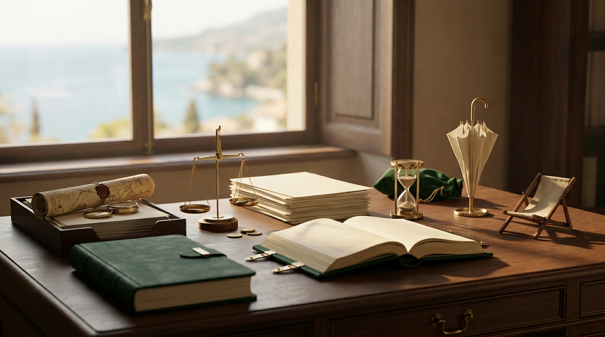

Concessioni balneari: l'indennizzo per il concessionario uscente
Il concessionario balneare che perde la concessione all'esito di una gara ha diritto a un indennizzo. Lo prevede la Legge 118/2022, confermata anche dalla Corte di Giustizia UE. Manca però il decreto attuativo: senza criteri di calcolo, il diritto resta sulla carta. Vediamo cosa dice la norma, cosa cambia per chi opera sul demanio e come muoversi nell'attuale fase di incertezza.

Il fatto
La stagione delle concessioni demaniali marittime entra in una fase delicata. Da un lato la spinta europea alla messa a gara delle aree balneari, dall'altro la tutela degli operatori uscenti, ossia di chi ha investito per anni su uno stabilimento e rischia di perderlo a favore di un nuovo aggiudicatario.
Il punto di equilibrio è l'indennizzo: una somma riconosciuta al concessionario che cede il passo al subentrante. La sua esistenza non è più in discussione. Il problema è renderlo operativo.
Inquadramento normativo
La fonte è l'art. 4 della Legge 5 agosto 2022, n. 118 (legge annuale per il mercato e la concorrenza). La norma stabilisce che il concessionario uscente ha diritto a un indennizzo, a carico del concessionario subentrante, per gli investimenti effettuati e per il valore dei beni non ammortizzati al termine del rapporto. Il dettaglio dei criteri di calcolo è però rinviato a un decreto legislativo attuativo, finora non entrato in vigore.
Il D.Lgs. 31 marzo 2023, n. 36 (Codice dei contratti pubblici) fornisce la cornice generale in materia di affidamenti, ma non colma il vuoto sui criteri specifici di quantificazione dell'indennizzo balneare.
Sul piano della compatibilità europea, la Corte di Giustizia UE con la sentenza nella causa C-598/22 (11 luglio 2024) ha chiarito che un indennizzo a favore dell'uscente non contrasta con la direttiva 2006/123 (cd. Bolkestein), purché non si traduca in un ostacolo all'apertura del mercato. In altri termini: l'indennizzo è legittimo, ma non può diventare una barriera all'ingresso per i nuovi operatori.
In ambito interno, il Consiglio di Stato (parere n. 750/2025) e il Tar Lazio hanno contribuito a delineare i confini applicativi, in attesa che il quadro regolatorio si completi.
Implicazioni pratiche
La conseguenza più rilevante è una doppia incertezza.
Per il concessionario uscente: il diritto all'indennizzo esiste, ma manca lo strumento per liquidarlo con criteri certi. Chi ha realizzato strutture, opere o investimenti non interamente ammortizzati rischia di vedersi riconosciuta una somma calcolata in modo disomogeneo da Comune a Comune, o di doverla rivendicare in sede contenziosa.
Per il concessionario subentrante: l'onere dell'indennizzo grava su di lui. Partecipare a una gara senza conoscere l'esatta entità della somma da corrispondere all'uscente significa assumere un costo non quantificabile a priore, con riflessi sulla sostenibilità economica dell'offerta.
Per i Comuni e per il Ministero delle Infrastrutture e dei Trasporti: la mancata adozione del decreto attuativo espone l'amministrazione a contenzioso e rende difficile bandire gare con regole stabili.
Il risultato è un sistema in cui il principio è chiaro ma il meccanismo operativo è ancora monco. Fino all'entrata in vigore della disciplina di dettaglio, gli importi rischiano di essere determinati caso per caso, con tutte le controversie che ne derivano.
Cosa fare in concreto
- Inventariate gli investimenti. Predisponete una documentazione analitica di opere, beni e migliorie realizzate sulla concessione, con date, costi sostenuti e piano di ammortamento. È la base su cui si fonderà qualsiasi richiesta di indennizzo.
- Conservate i titoli e i provvedimenti. Tenete ordinati atti di concessione, rinnovi, autorizzazioni edilizie e collaudi: serviranno a dimostrare la legittimità e il valore degli interventi.
- Monitorate l'iter del decreto attuativo. Le condizioni economiche di una futura gara dipendono dai criteri che verranno adottati. Consigliamo di seguire gli sviluppi normativi prima di assumere impegni.
- Valutate la posizione prima di partecipare a una gara da subentrante. Quantificate, con il supporto di un consulente, l'esposizione potenziale derivante dall'indennizzo verso l'uscente.
- Verificate i bandi comunali. In assenza di criteri uniformi, ogni Comune può muoversi diversamente: leggete con attenzione le clausole sull'indennizzo prima di presentare offerta.
Conclusione
L'indennizzo al balneare uscente è un diritto riconosciuto e compatibile con il diritto europeo. La sua effettività dipende però dal completamento del quadro regolatorio. In questa fase di transizione, la prudenza e una documentazione accurata sono gli strumenti migliori per tutelare la propria posizione, sia come uscente sia come subentrante.
---
Contributo informativo a cura di Tamburro & Partners - Avv. Giuseppe Tamburro. Non costituisce parere legale.
Ogni contratto ha il suo equilibrio.
Se vuoi una revisione delle clausole o una redazione su misura, scrivi allo studio. Ti rispondiamo entro un giorno lavorativo.